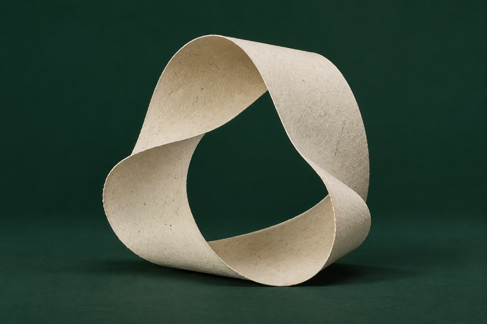

Récupérer.
Le papier usagé devient un point de départ. Collecté et trié, il entre dans un nouveau cycle.
DU DÉCHET À LA RESSOURCE
Nous donnons au papier un nouvel avenir.
Et aux ressources, une nouvelle perspective.
Une feuille utilisée est encore pleine de possibilités. Au Maroc, Masira transforme le papier récupéré en ressource, pour faire vivre la valeur de ses fibres.
Une même matière.
De nouvelles possibilités.
Le papier usagé devient un point de départ. Collecté et trié, il entre dans un nouveau cycle.
DU DÉCHET À LA RESSOURCELe papier est remis en pâte. Ses fibres sont séparées et nettoyées, prêtes à être réunies à nouveau.
RÉVÉLER LE POTENTIELFormée et séchée, la matière redevient papier. Une nouvelle vie, à partir de ce qui existe déjà.
LE PROCHAIN CHAPITRE COMMENCE ICIChaque fibre a encore quelque chose à offrir. Notre rôle : la garder dans le cycle.
Imaginons la suite ensemble ↗Récupérer le papier qui a déjà servi et préserver la valeur de la matière.
Relier récupération, transformation et usage dans une même démarche.
Contribuer à une filière de recyclage du papier ancrée au Maroc.
Le prochain chapitre commence par une conversation.